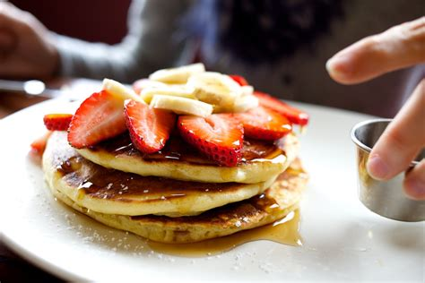

Home
Best Buttermilk Pancakes Recipe

Recipe Description
This classic buttermilk pancake recipe will make you wonder why you ever bothered with boxed mix from the store! These pancakes require simple ingedients and in only 15 minutes, you will have thick, fluffy, and super flavorful restaurant-quality pancakes.
Ingredients
- 2 cups (250 grams) all-purpose flour
- 3 tbsp sugar
- 2 tsp baking powder
- 1/2 tsp baking soda
- 1/2 tsp salt
- 2 1/4 cups (530 ml) buttermilk
- 2 large eggs, lightly beaten, room temperature preferred
- 1 tsp vanilla extract
- 4 tbsp (57 grams) unsalted butter, melted and cooled
Steps
- In a large bowl, whisk together flour, sugar, baking powder, baking soda, and salt until well-combined.
- In a separate, medium-sized bowl, whisk together buttermilk, eggs, and vanilla extract.
- Take your melted butter and slowly drizzle it into your wet ingredients while whisking until well-combined (the butter may separate and curdle if your other ingredients are cold. This is okay, just whick to combine).
- Pour wet ingredients into dry ingredients and use a wooden spoon to stir until just combined - do not overmix your pancake batter or your pancakes will be flat. Use a light hand when stirring, and a few flour streaks in the batter are fine.
- Spray a non-stick skillet with cooking spray or lightly brush with canola oil and place on burner on medium-low heat.
- Allow skillet to preheat before adding batter (about 5 minutes). Once skillet is heated scoop pancake batter into pan using 1/2-2/3 cups of batter per pancake.
- Allow pancakes to cook until edges begin to appear cooked and bubbles in batter begin to burst. Carefully flip pancake and continue to cook for several more minutes until golden brown.